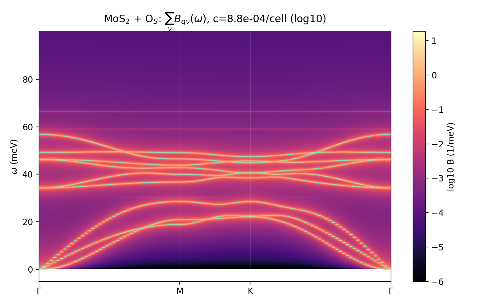
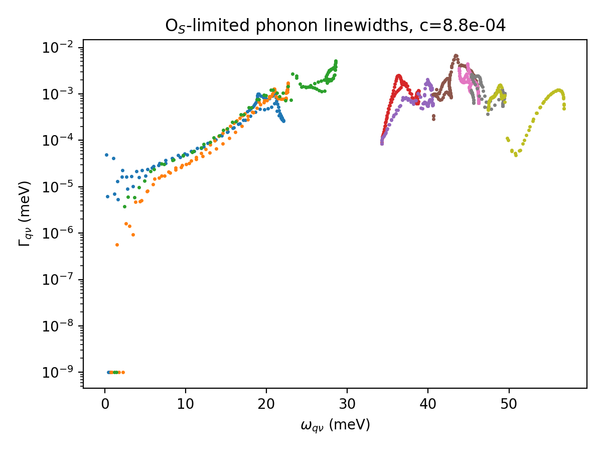

Contents
Same pipeline as the V$_S$ run, with the sulfur vacancy replaced by an oxygen substitutional on the same site. Physically this swaps the defect class: O$_S$ is a mass + bond perturbation ($\Delta M/M_S=-0.50$, stiffer Mo–O bonds) rather than a missing site — and the T-matrix now carries the frequency-dependent perturbation $V(z)=\Delta\mathcal D-z\,\varepsilon$ of the derivation note §4, exercised here for the first time. All reusable assets were reused: host DFPT, pristine force constants, and (the defect sits on the same site → identical 32-atom cluster) the cached spectral density $\rho_{ab}(\lambda)$. Marginal cost ≈ 12 node-hours (relax 1 h 46 m + 126-displacement array ~2 h wall).
1. Run summary
| Step | Outcome | ||
|---|---|---|---|
| Structure | O placed on the V$_S$ site, BFGS 36 steps; O sinks 0.56 Å toward the Mo plane (Mo–O < Mo–S bond length); exact P3m1 kept | ||
| FD | 126 displacements (P3m1), 0 failures; array throttle raised mid-run to 12 concurrent (scontrol update ArrayTaskThrottle) | ||
| Perturbation | $\lVert\Delta D\rVert_2\approx346$ meV² (vs 2210 for V$_S$ — gentler bond perturbation), plus mass term $\max\lvert\varepsilon\rvert=0.501$ | ||
| Gates | V2: NN 0.087 → edge 5.5×10⁻³ Ry/bohr² (edge ≈ FD noise floor); V3: max\ | t\ | = 0 exactly; $\int B\,d\omega=0.9996$ mean; V5 below |
2. Headline: true localized modes above the host spectrum
The light O on stiff bonds pushes three local modes out of the host phonon spectrum (host top 56.8 meV) — the classic light-impurity local vibrational modes:
| T-matrix pole (meV) | min\ | eig(1−Vg)\ | Direct diagonalization (meV) | PR | cluster weight | character | |
|---|---|---|---|---|---|---|---|
| 59.04 | 1.8×10⁻³ | 59.19 (×2) | 0.004 | 0.999 | e doublet — in-plane O vibration | ||
| 66.36 | 1.7×10⁻³ | 66.24 | 0.004 | 0.999 | a₁ — out-of-plane O vibration |
Agreement 0.12–0.15 meV between two independent formulations: the T-matrix works with host masses and the frequency-dependent $-z\varepsilon$ term, the supercell diagonalization with the real O mass — their coincidence is the strongest end-to-end validation of the $V(z)$ implementation. Participation ratio 0.004 ≈ a single-atom oscillator; spectral weight on the defect cluster 99.9%.
In-band resonances also match: 30.33 ↔ 30.30 meV (deep minimum 1.8×10⁻², cluster weight 0.87) and 41.04 ↔ 40.89 meV (0.82). The direct ΔDOS confirms +2 states at 59–60 meV and +1 at 66–67 meV pulled out of the bands.
3. Spectral function and linewidths

The local modes appear as faint flat lines at 59 and 66 meV above the bands (weight ∝ c per mode). In-band, O$_S$ is a gentler scatterer than the vacancy: mean on-shell linewidth $1.1\times10^{-3}$ meV (V$_S$: $2.3\times10^{-3}$), maximum $6.8\times10^{-3}$ meV at 43.4 meV ⇒ $\tau_{\min}\approx49$ ps at $n_d=10^{12}$ cm⁻².

4. V$_S$ vs O$_S$ at a glance
| V$_S$ (vacancy) | O$_S$ (substitution) | |
|---|---|---|
| Perturbation | bond removal, $\lVert\Delta D\rVert\approx2210$ meV², no mass term (decoupling) | bond change $\lVert\Delta D\rVert\approx346$ meV² + mass $\varepsilon=-0.50$ |
| $V(z)$ | $z$-independent | $\Delta\mathcal D - z\,\varepsilon$ |
| Localized modes | none (in-band resonances only) | e 59.2 + a₁ 66.2 meV above the band |
| Strongest in-band features | a₁ 40.9, e 42.2/46.7, 34.5 meV | 30.3, 40.9 meV |
| Mean / max linewidth @10¹² cm⁻² | 2.3 / 8.9 ×10⁻³ meV | 1.1 / 6.8 ×10⁻³ meV |
| $\tau_{\min}$ | 37 ps | 49 ps |
The two defects are thus spectroscopically distinguishable: O$_S$ announces itself by sharp high-frequency local modes (Raman/IR candidates at ≈476 and ≈534 cm⁻¹), while V$_S$ shows only in-band resonance broadening.
5. Caveats
Same as the V$_S$ run (ZA interpolation artifact, 4×4×1 DFPT k-grid cap, no non-adiabatic e–ph term, 2D dipole corrections omitted). One O$_S$-specific note: the Krein ΔDOS integrates to +0.29 (ideal 0 for a substitution — all 324 states conserved); the residual reflects the finite ω-mesh and η. Artifacts: /scratch/rjguo/vs_phonon/analysis/{dphi_os,tmat_os_path}.npz, os_*.dat/png, DFT under os_relax/, os_fd/.